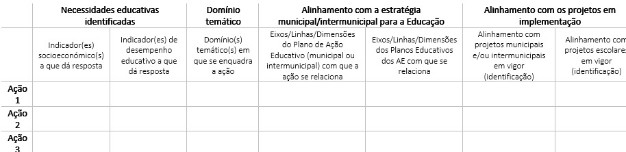

Capítulo 6 Policy recommendations
Enquadrada pelo Método Aberto de Coordenação, a ação europeia na Educação passa, em larga medida, pela difusão de recomendações. Argumentamos que estas recomendações podem ser mais aprofundadas e detalhadas, designadamente no rescaldo de projetos de avaliação como o presente. Nesta linha, avança-se com recomendações que não se circunscrevem ao território e ao PIICIE de Santa Maria da Feira, ainda que partam deste, das oportunidades e desafios identificados. Olhando para a proposta do Programa Demografia, Qualificações e Inclusão (atualmente em consulta pública), enquadrado pelo Portugal 2030, confirma-se a manutenção da centralidade das qualificações como aposta estruturante, uma vez que “o baixo nível de qualificações de uma grande fatia da população continua a ser uma das maiores fragilidades estruturais” (Portugal 2030, 2022). Assim, assume-se que as recomendações que se seguem podem ser mobilizadas para o sistema de monitorização e avaliação das políticas cofinanciadas de promoção do sucesso escolar, enquadrados pelo quadro 2021-2027.
6.1 Recomendações sobre o combate ao insucesso escolar
Footnotes are put inside the square brackets after a caret ^[]. Like this one 9.
6.2 Recomendações (metodológicas) para os programas de combate ao insucesso escolar cofinanciados no quadro 2021-2027
Avaliação ex-ante PR1.1. Atualização do leque de indicadores de desempenho educativo, também designados por ‘Indicadores de resultado’ nos Avisos do QFP 2014-20, de modo a incluir os indicadores de equidade que ganharam força na governação educativa nos últimos anos Aquando da formulação dos PIICIE e dos primeiros avisos (2016), os indicadores de equidade ainda não haviam sido formulados. Porém, estes impuseram-se recentemente como aqueles mais apropriados para medir o sucesso escolar (DGEEC, 2022a; POCH, 2021). Devem, assim, ser integrados os seguintes indicadores: • Conclusão no tempo esperado; • Percursos diretos de sucesso; • Indicador de equidade, que mede os níveis de sucesso educativo dos alunos de condições socioeconómicas mais frágeis.
PR1.2. Consolidação do papel e posicionamento dos Municípios e das CIM como intermediários entre os órgãos de administração das escolas e as entidades de governo nacionais, designadamente no que diz respeito às estatísticas educativas Os Municípios e CIM não serão bem-sucedidos, nem rigorosos, na formulação de estratégias educativas se não tiverem conhecimento atualizado sobre as suas realidades. Assim, fazendo uso da interoperabilidade de sistemas (e da crescente difusão de Observatórios Municipais de Educação), a candidatura aos programas de combate ao insucesso deve partir de um diagnóstico de desempenho educativo atualizado e pertinente, que permita identificar aspetos críticos da realidade educativa do território. Os Observatórios deverão ser úteis para lá do diagnóstico, adicionalmente entendidos como essenciais na recolha e sistematização de informação para a monitorização dos programas. Compreende-se que a DGEEC seja a gatekeeper das estatísticas educativas no contexto português, mas, perante um crescente contexto de descentralização de competências, não é irrazoável ambicionar um papel mais ativo das entidades subnacionais na organização e divulgação daquelas.
PR1.3. Promoção de incentivos para a construção de metas e objetivos territorializados, que capturem e acompanhem a realidade socioeducativa abrangida pela ação. Os territórios são intrinsecamente diversos, pelo que se argumenta pela necessidade de formular indicadores em coerência com o diagnóstico previamente elaborado. Pelas suas especificidades, estes indicadores, tão contextuais quanto possível, não podem constar nos editais, daí que deva, ao invés, ser criada a estrutura de incentivos adequada. À obrigatoriedade da elaboração do diagnóstico socioeducativo deve seguir-se uma consequente bateria de indicadores específicos, construída pela entidade beneficiária. Para qualquer um dos indicadores, devem ser contratualizados resultados esperados, assim como lançadas as bases para a recolha de dados longitudinais, sobre os participantes envolvidos, que facilitem a elaboração de avaliações de impacto. Estes últimos poderão contemplar, por exemplo, níveis de aproveitamento e percurso escolar dos alunos participantes. Ainda que aparente ser um exercício de elevada abstração, representa uma etapa fulcral para o futuro confronto do projetado e do alcançado, de modo a acompanhar e aferir o sucesso da operação.
PR1.4. Robustecimento do diálogo entre a estratégia educativa do território e o PIICIE a implementar Deve ser evitada a multiplicação de estratégias difusas, assegurando a convergência dos programas de combate ao insucesso com as estratégias escolares, municipais e intermunicipais implementadas que, por sua vez, deverão intimamente relacionadas com os desafios educativos territoriais. Apenas deste modo será possível investir numa política educativa robusta, integrada e de continuidade.
Recomenda-se, assim, o preenchimento, em sede de candidatura, de uma grelha similar à seguinte, explicitando este desejado diálogo.

PR1.5. Garantia de condições de gestão e administração das entidades beneficiárias, de forma a aumentar a probabilidade de sucesso na implementação da operação
O sucesso do plano de promoção do sucesso depende, em larga medida, dos Recursos Humanos mobilizados para a sua implementação e acompanhamento. Sendo estes planos tão dependentes da interação interinstitucional entre atores, é crucial que estes apostem nos momentos de contacto e difusão. Esta necessidade torna-se mais premente em planos dinamizados por CIM, onde a rede é mais extensa e de mais exigente articulação.
Assim, será relevante definir e monitorizar, quantitativamente:
• Técnicos Superiores envolvidos no acompanhamento do plano;
• Reuniões internas sobre o plano;
• Reuniões da entidade beneficiária com entidades parceiras;
• Instrumentos de avaliação;
• Sessões abertas à comunidade educativa para divulgação do plano.
Monitorização
PR2.1. Acompanhamento e avaliação periódica da evolução do território nos indicadores de desempenho educativo e nos indicadores de realização das ações Os relatórios anuais que as entidades beneficiárias remetem à autoridade de gestão, indicando as ações desenvolvidas durante esse período, deverão compreender, igualmente, a evolução do território nos indicadores de desempenho educativo. Sendo um dos desafios, na avaliação de políticas educativas, o desfasamento temporal na publicação de estatísticas educativas, torna-se ainda mais urgente a formalização de maiores competências das entidades subnacionais neste sentido. O acompanhamento da evolução dos indicadores de desempenho educativo possibilita a identificação de desafios ao longo da implementação do PIICIE, conduzindo a pequenos ajustes do plano para fazer face àqueles. Não sendo desejáveis desvios significativos face ao estabelecido na memória descritiva do projeto, tais ajustes devem ser formulados com parcimónia. Paralelamente, importa também encetar regularmente uma avaliação da execução face à previsão no que concerne os indicadores de realização de cada uma das ações, olhando para: • Alunos participantes; • Encarregados de Educação participantes; • Docentes envolvidos; • Parcerias criadas; • Atividades realizadas. Os indicadores propostos na PR1.5. devem também ser alvo desta monitorização anual.
Avaliação ex-post PR3.1. Avaliação final da evolução do território nos indicadores de desempenho educativo deve ser encarada como um ponto de partida para análises mais complexas Naturalmente, e à semelhança do realizado nesta primeira geração de PIICIE, as entidades devem prestar contas, no final da execução do projeto, sobre a evolução do território face às metas contratualizadas, incidentes sobre o desempenho educativo e a realização das ações. Olhar para os indicadores de desempenho educativo não traduzirá de forma completa e fiel o efeito dos PIICIE, uma vez que certamente não serão a única medida de promoção do sucesso. A própria terminologia “indicadores de resultado”, adotada no quadro 2014-20, é enganadora. Estes indicadores são, porém, essenciais para análises de correlação e causalidade mais sofisticadas. Adicionalmente, é ideal que tenha sido colocada em ação, desde o arranque do projeto, a matriz de recolha de dados longitudinais mencionada na PR1.3.
PR3.2. Disseminação dos resultados através de eventos públicos e da comunicação institucional Entende-se que os programas cofinanciados de promoção do sucesso escolar não podem permanecer exclusivamente na esfera das entidades beneficiárias e parceiras. Deve, por isso, ser encetado um esforço de divulgação das ações e dos respetivos resultados junto de toda a comunidade educativa do território em questão, assim promovendo a visibilidade do cofinanciamento europeu na área da Educação.
Reference items in your bibliography file(s) using @key.
For example, we are using the bookdown package (Xie 2022) (check out the last code chunk in index.Rmd to see how this citation key was added) in this sample book, which was built on top of R Markdown and knitr (Xie 2015) (this citation was added manually in an external file book.bib).
Note that the .bib files need to be listed in the index.Rmd with the YAML bibliography key.
The RStudio Visual Markdown Editor can also make it easier to insert citations: https://rstudio.github.io/visual-markdown-editing/#/citations
6.3 Recomendações sobre a atuação das Comunidades Intermunicipais
Antecipa-se que as Comunidades Intermunicipais venham a reforçar a sua atuação no combate ao insucesso escolar. O POR Norte para o período de programação 2021-2027 já se encontra a preparar os Planos Intermunicipais de Promoção do Sucesso Escolar (PIPSE), sucessores dos PIICIE (PT 2 PT Índic>, n.d.). ERRO REF Tal alteração torna as CIM e a AMP as únicas entidades beneficiárias destas políticas cofinanciadas, numa transferência que aparenta reforçar as suas responsabilidades. Este caminho deve, no entanto, ser trilhado com a consciência dos desafios subjacentes. Alguns destes foram já mencionados nas orientações associadas a cada fase de avaliação dos programas de combate ao insucesso, mas importa sistematizá-los, sendo vários deles associados a problemas de ação coletiva e de delegação/externalização . Garrone et al. (2012) ou Allers e de Greef (2017) concluem que a cooperação intermunicipal pode levar a perdas de eficiência.
REFERÊNCIAS BIBLIOGRÁFICAS E ELETRÓNICAS Presidência do Conselho de Ministros. (2018). “Decreto-Lei 54/2018”. Diário da República 1ª série, 129 (julho): 2918 – 2928. https://data.dre.pt/eli/dec-lei/54/2018/07/06/p/dre/pt/html # Policy recommendations
Enquadrada pelo Método Aberto de Coordenação, a ação europeia na Educação passa, em larga medida, pela difusão de recomendações. Argumentamos que estas recomendações podem ser mais aprofundadas e detalhadas, designadamente no rescaldo de projetos de avaliação como o presente. Nesta linha, avança-se com recomendações que não se circunscrevem ao território e ao PIICIE de Santa Maria da Feira, ainda que partam deste, das oportunidades e desafios identificados. Olhando para a proposta do Programa Demografia, Qualificações e Inclusão (atualmente em consulta pública), enquadrado pelo Portugal 2030, confirma-se a manutenção da centralidade das qualificações como aposta estruturante, uma vez que “o baixo nível de qualificações de uma grande fatia da população continua a ser uma das maiores fragilidades estruturais” (Portugal 2030, 2022). Assim, assume-se que as recomendações que se seguem podem ser mobilizadas para o sistema de monitorização e avaliação das políticas cofinanciadas de promoção do sucesso escolar, enquadrados pelo quadro 2021-2027.
6.4 Recomendações sobre o combate ao insucesso escolar
Footnotes are put inside the square brackets after a caret ^[]. Like this one 10.
6.5 Recomendações (metodológicas) para os programas de combate ao insucesso escolar cofinanciados no quadro 2021-2027
Avaliação ex-ante PR1.1. Atualização do leque de indicadores de desempenho educativo, também designados por ‘Indicadores de resultado’ nos Avisos do QFP 2014-20, de modo a incluir os indicadores de equidade que ganharam força na governação educativa nos últimos anos Aquando da formulação dos PIICIE e dos primeiros avisos (2016), os indicadores de equidade ainda não haviam sido formulados. Porém, estes impuseram-se recentemente como aqueles mais apropriados para medir o sucesso escolar (DGEEC, 2022a; POCH, 2021). Devem, assim, ser integrados os seguintes indicadores: • Conclusão no tempo esperado; • Percursos diretos de sucesso; • Indicador de equidade, que mede os níveis de sucesso educativo dos alunos de condições socioeconómicas mais frágeis.
PR1.2. Consolidação do papel e posicionamento dos Municípios e das CIM como intermediários entre os órgãos de administração das escolas e as entidades de governo nacionais, designadamente no que diz respeito às estatísticas educativas Os Municípios e CIM não serão bem-sucedidos, nem rigorosos, na formulação de estratégias educativas se não tiverem conhecimento atualizado sobre as suas realidades. Assim, fazendo uso da interoperabilidade de sistemas (e da crescente difusão de Observatórios Municipais de Educação), a candidatura aos programas de combate ao insucesso deve partir de um diagnóstico de desempenho educativo atualizado e pertinente, que permita identificar aspetos críticos da realidade educativa do território. Os Observatórios deverão ser úteis para lá do diagnóstico, adicionalmente entendidos como essenciais na recolha e sistematização de informação para a monitorização dos programas. Compreende-se que a DGEEC seja a gatekeeper das estatísticas educativas no contexto português, mas, perante um crescente contexto de descentralização de competências, não é irrazoável ambicionar um papel mais ativo das entidades subnacionais na organização e divulgação daquelas.
PR1.3. Promoção de incentivos para a construção de metas e objetivos territorializados, que capturem e acompanhem a realidade socioeducativa abrangida pela ação. Os territórios são intrinsecamente diversos, pelo que se argumenta pela necessidade de formular indicadores em coerência com o diagnóstico previamente elaborado. Pelas suas especificidades, estes indicadores, tão contextuais quanto possível, não podem constar nos editais, daí que deva, ao invés, ser criada a estrutura de incentivos adequada. À obrigatoriedade da elaboração do diagnóstico socioeducativo deve seguir-se uma consequente bateria de indicadores específicos, construída pela entidade beneficiária. Para qualquer um dos indicadores, devem ser contratualizados resultados esperados, assim como lançadas as bases para a recolha de dados longitudinais, sobre os participantes envolvidos, que facilitem a elaboração de avaliações de impacto. Estes últimos poderão contemplar, por exemplo, níveis de aproveitamento e percurso escolar dos alunos participantes. Ainda que aparente ser um exercício de elevada abstração, representa uma etapa fulcral para o futuro confronto do projetado e do alcançado, de modo a acompanhar e aferir o sucesso da operação.
PR1.4. Robustecimento do diálogo entre a estratégia educativa do território e o PIICIE a implementar Deve ser evitada a multiplicação de estratégias difusas, assegurando a convergência dos programas de combate ao insucesso com as estratégias escolares, municipais e intermunicipais implementadas que, por sua vez, deverão intimamente relacionadas com os desafios educativos territoriais. Apenas deste modo será possível investir numa política educativa robusta, integrada e de continuidade.
Recomenda-se, assim, o preenchimento, em sede de candidatura, de uma grelha similar à seguinte, explicitando este desejado diálogo.
PR1.5. Garantia de condições de gestão e administração das entidades beneficiárias, de forma a aumentar a probabilidade de sucesso na implementação da operação
O sucesso do plano de promoção do sucesso depende, em larga medida, dos Recursos Humanos mobilizados para a sua implementação e acompanhamento. Sendo estes planos tão dependentes da interação interinstitucional entre atores, é crucial que estes apostem nos momentos de contacto e difusão. Esta necessidade torna-se mais premente em planos dinamizados por CIM, onde a rede é mais extensa e de mais exigente articulação.
Assim, será relevante definir e monitorizar, quantitativamente:
• Técnicos Superiores envolvidos no acompanhamento do plano;
• Reuniões internas sobre o plano;
• Reuniões da entidade beneficiária com entidades parceiras;
• Instrumentos de avaliação;
• Sessões abertas à comunidade educativa para divulgação do plano.
Monitorização
PR2.1. Acompanhamento e avaliação periódica da evolução do território nos indicadores de desempenho educativo e nos indicadores de realização das ações Os relatórios anuais que as entidades beneficiárias remetem à autoridade de gestão, indicando as ações desenvolvidas durante esse período, deverão compreender, igualmente, a evolução do território nos indicadores de desempenho educativo. Sendo um dos desafios, na avaliação de políticas educativas, o desfasamento temporal na publicação de estatísticas educativas, torna-se ainda mais urgente a formalização de maiores competências das entidades subnacionais neste sentido. O acompanhamento da evolução dos indicadores de desempenho educativo possibilita a identificação de desafios ao longo da implementação do PIICIE, conduzindo a pequenos ajustes do plano para fazer face àqueles. Não sendo desejáveis desvios significativos face ao estabelecido na memória descritiva do projeto, tais ajustes devem ser formulados com parcimónia. Paralelamente, importa também encetar regularmente uma avaliação da execução face à previsão no que concerne os indicadores de realização de cada uma das ações, olhando para: • Alunos participantes; • Encarregados de Educação participantes; • Docentes envolvidos; • Parcerias criadas; • Atividades realizadas. Os indicadores propostos na PR1.5. devem também ser alvo desta monitorização anual.
Avaliação ex-post PR3.1. Avaliação final da evolução do território nos indicadores de desempenho educativo deve ser encarada como um ponto de partida para análises mais complexas Naturalmente, e à semelhança do realizado nesta primeira geração de PIICIE, as entidades devem prestar contas, no final da execução do projeto, sobre a evolução do território face às metas contratualizadas, incidentes sobre o desempenho educativo e a realização das ações. Olhar para os indicadores de desempenho educativo não traduzirá de forma completa e fiel o efeito dos PIICIE, uma vez que certamente não serão a única medida de promoção do sucesso. A própria terminologia “indicadores de resultado”, adotada no quadro 2014-20, é enganadora. Estes indicadores são, porém, essenciais para análises de correlação e causalidade mais sofisticadas. Adicionalmente, é ideal que tenha sido colocada em ação, desde o arranque do projeto, a matriz de recolha de dados longitudinais mencionada na PR1.3.
PR3.2. Disseminação dos resultados através de eventos públicos e da comunicação institucional Entende-se que os programas cofinanciados de promoção do sucesso escolar não podem permanecer exclusivamente na esfera das entidades beneficiárias e parceiras. Deve, por isso, ser encetado um esforço de divulgação das ações e dos respetivos resultados junto de toda a comunidade educativa do território em questão, assim promovendo a visibilidade do cofinanciamento europeu na área da Educação.
Reference items in your bibliography file(s) using @key.
For example, we are using the bookdown package (Xie 2022) (check out the last code chunk in index.Rmd to see how this citation key was added) in this sample book, which was built on top of R Markdown and knitr (Xie 2015) (this citation was added manually in an external file book.bib).
Note that the .bib files need to be listed in the index.Rmd with the YAML bibliography key.
The RStudio Visual Markdown Editor can also make it easier to insert citations: https://rstudio.github.io/visual-markdown-editing/#/citations
6.6 Recomendações sobre a atuação das Comunidades Intermunicipais
Antecipa-se que as Comunidades Intermunicipais venham a reforçar a sua atuação no combate ao insucesso escolar. O POR Norte para o período de programação 2021-2027 já se encontra a preparar os Planos Intermunicipais de Promoção do Sucesso Escolar (PIPSE), sucessores dos PIICIE (PT 2 PT Índic>, n.d.). ERRO REF Tal alteração torna as CIM e a AMP as únicas entidades beneficiárias destas políticas cofinanciadas, numa transferência que aparenta reforçar as suas responsabilidades. Este caminho deve, no entanto, ser trilhado com a consciência dos desafios subjacentes. Alguns destes foram já mencionados nas orientações associadas a cada fase de avaliação dos programas de combate ao insucesso, mas importa sistematizá-los, sendo vários deles associados a problemas de ação coletiva e de delegação/externalização . Garrone et al. (2012) ou Allers e de Greef (2017) concluem que a cooperação intermunicipal pode levar a perdas de eficiência.
REFERÊNCIAS BIBLIOGRÁFICAS E ELETRÓNICAS Presidência do Conselho de Ministros. (2018). “Decreto-Lei 54/2018”. Diário da República 1ª série, 129 (julho): 2918 – 2928. https://data.dre.pt/eli/dec-lei/54/2018/07/06/p/dre/pt/html Câmara Municipal de Santa Maria da Feira. Disponível em: https://cm-feira.pt/.
Mendeley Cite/Mendeley Reference Manager Agência para o Desenvolvimento e Coesão. (n.d.). Monitorização - Enquadramento. Retrieved August 23, 2022, from https://www.adcoesao.pt/fundos/portugal-2020/monitorizacao/enquadramento/ Allers, M. A., & de Greef, J. A. (2017). Intermunicipal cooperation, public spending and service levels. Local Government Studies, 44(1), 127–150. https://doi.org/10.1080/03003930.2017.1380630 DGEEC. (2022a). Educação Inclusiva 2020/2021. Apoio à Aprendizagem e à Inclusão, escolas da rede pública do Ministério da Educação. DGEEC. (2022b). Plano 21|23 Escola+. Segundo relatório de monitorização. http://www.dgeec.mec.pt Garrone, P., Grilli, L., & Rousseau, X. (2012). Local Government Studies Management Discretion and Political Interference in Municipal Enterprises. Evidence from Italian Utilities Management Discretion and Political Interference in Municipal Enterprises. Evidence from Italian Utilities. https://doi.org/10.1080/03003930.2012.726198 Gaspar de Matos, M., Branquinho, C., Noronha, C., Moraes, B., Santos, O., Carvalho, M., Simões, C., Marques, A., Tomé, G., Guedes, F. B., Cerqueira, A., Francisco, R., & Gaspar, T. (2022). Observatório de Saúde Psicológica e Bem-Estar: Monitorização e Ação. IESE, ISCTE, & PPLL Consult. (2021). Avaliação do Contributo do PT2020 para a Promoção do Sucesso Educativo, Redução do Abandono Escolar Precoce e Empregabilidade dos Jovens. https://doi.org/10.38116/bapi25 Verdasca, J. (2020). Contributos para o desenvolvimento de um sistema de auto e multirregulação educativa. Revista Portuguesa de Investigação Educacional, n.o Especial, 111–143. https://doi.org/10.34632/investigacaoeducacional.2020.8503
Mendeley Cite/Mendeley Desktop Carvalho, M., & Joana, L. (2020). Uma análise comparada: sistemas inspetivos de alguns países. Revista Lusofona de Educacao, 50(50), 27–41. https://doi.org/10.24140/issn.1645-7250.rle50.02 CCDR-Norte. (2022). Programa Regional do Norte 2021-2027: Proposta. https://www.ccdr-n.pt/storage/app/media/uploaded-files/po20norte202030versc3a3oconsultapublica.pdf Decreto-Lei n.o 21/2019, de 30 de janeiro, do Ministério da Administração Interna, Pub. L. No. Diário da República n.o 21/2019, Série I (2019). Decreto-Lei n.o 7/2003, de 15 de janeiro, do Ministério das Cidades, Ordenamento do Território e Ambiente, Pub. L. No. Diário da República n.o 12/2003, Série I-A (2003). Decreto-Lei n.o 72/2015, de 11 de maio, da Presidência do Conselho de Ministros, Pub. L. No. Diário da República n.o 90/2015, Série I (2015). DGEEC. (2022a). Resultados Escolares: Sucesso e Equidade. DGEEC. (2022b). Taxa de retenção e desistência (%), por sexo, nível de ensino, ciclo de estudos e ano de escolaridade - Continente, NUTS II, III e Municípios – 2003/04 a 2020/21. https://www.dgeec.mec.pt/np4/248/ DGEEC, DGEstE, & IGeFE. (2021). Carta Educativa, Guião para Elaboração. https://www.igefe.mec.pt/Files/DownloadDocument/17?csrt=5775597188220950806 Education Scotland. (2015). How good is our school? (4th edition). www.educationscotland.gov.uk/resources/h/hgios4/ Ehren, M., & Shackleton, N. (2016). Risk-based school inspections: impact of targeted inspection approaches on Dutch secondary schools. Educational Assessment, Evaluation and Accountability, 299–321. https://doi.org/10.1007/s11092-016-9242-0 INE. (2021). População residente (N.o) por Local de residência, Sexo e Níveis de ensino; Decenal - INE, Recenseamento da população e habitação - Censos 2021. https://www.ine.pt/xportal/xmain?xpid=INE&xpgid=ine_indicadores&indOcorrCod=0011168&xlang=pt Inspeção-Geral da Educação e Ciência (IGEC). (2016). Avaliação Externa das Escolas QUADRO DE REFERÊNCIA PARA A AVALIAÇÃO EXTERNA DAS ESCOLAS. https://www.igec.mec.pt/upload/AEE_2016-2017/AEE_16_17_(1)_Quadro_de_Referencia.pdf Inspeção-Geral da Educação e Ciência (IGEC). (2018a). Terceiro Ciclo da Avaliação Externa das Escolas - Âmbito, princípios e objetivos. https://www.igec.mec.pt/upload/AEE3_2018/AEE_3_Amb_princ_objetivos.pdf Inspeção-Geral da Educação e Ciência (IGEC). (2018b). Terceiro Ciclo da Avaliação Externa das Escolas - Quadro de referência. https://www.igec.mec.pt/upload/AEE3_2018/AEE_3_Quadro_Ref.pdf Ioannidou, A. (2010). Educational monitoring and reporting as governance instruments for evidence-based education policy. International Perspectives on Education and Society, 12, 155–172. https://doi.org/10.1108/S1479-3679(2010)0000012011/FULL/XML Mairate, A. (2007). The ‘added value’ of European Union Cohesion policy. Regional Studies, 40(2), 167–177. https://doi.org/10.1080/00343400600600496 Marques, J. L., Neves, R., Grifo, A., Duarte, J., Malta, J., Sousa, M. P., & Santos, S. (n.d.). Plano Estratégico Educativo Municipal de Santa Maria da Feira 2022-2030. Marques, J. L., Wolf, J., Borges, M., & Batista, P. (2020). Sistemas de apoio à decisão em planeamento: desafios metodológicos e conceptuais. TPU: Território, Planeamento e Urbanismo: Teoria e Prática, 2, 52–79. https://doi.org/10.34624/TPU.V0I2.23720 Ministério da Educação. (2011). Propostas para um novo ciclo de avaliação externa de escolas, Relatório Final, Grupo de Trabalho para a Avaliação Externa das Escolas 2011. https://www.igec.mec.pt/upload/AEE2_2011/AEE2_GT_2011_RELATORIO_FINAL.pdf Ministério da Educação, & Inspeção-Geral da Educação (IGE). (2010). QUADRO DE REFERÊNCIA PARA A AVALIAÇÃO DE ESCOLAS E AGRUPAMENTOS DE ESCOLAS. https://www.igec.mec.pt/upload/AEE_2011/AEE_10_11_Quadro_Referencia.pdf Nóvoa, A. (2013). The Blindness of Europe: New Fabrications in the European Educational Space. SISYPHUS Journal of Education, 1(1), 104–123. http://ec.europa.eu/europe2020/services/faqs/index_en.htm Oliveira, P., Clímaco, M., Carravilla, M., Sarrico, C., Azevedo, M., & Oliveira, J. (2006). Relatório final da actividade do Grupo de Trabalho para Avaliação das Escolas Dezembro 2006. https://www.igec.mec.pt/upload/Relatorios/AEE_06_RELATORIO_GT.pdf POCH. (2021). Novo indicador de equidade na educação. https://www.poch.portugal2020.pt/pt-pt/Noticias/Paginas/noticia.aspx?nid=750 Portugal 2030. (2022). Programa Demografia, Qualificações e Inclusão - Proposta de programa. Santos, S., Duarte, J. & Marques, J. L. (2019). Quadro de referência aplicado aos instrumentos de gestão da rede e da política educativa à escala local. Revista de Desarrollo Sustentable, Negocios, Emprendimiento y Educación, 1(1), 1–19. The Educational Institute of Scotland (EIS). (2019). EDUCATION SCOTLAND INSPECTIONS, General, Advice for members. www.eis.org.uk XXI GOVERNO - REPÚBLICA PORTUGUESA. (2019, February). Modelo de Avaliação Externa das Escolas – novo ciclo / Avaliação externa alargada às escolas profissionais privadas e às escolas com contrato de associação/patrocínio. NOTA À COMUNICAÇÃO SOCIAL. https://www.portugal.gov.pt/download-ficheiros/ficheiro.aspx?v=%3D%3DBAAAAB%2BLCAAAAAAABAAzN7Q0AQCs6SFGBAAAAA%3D%3D